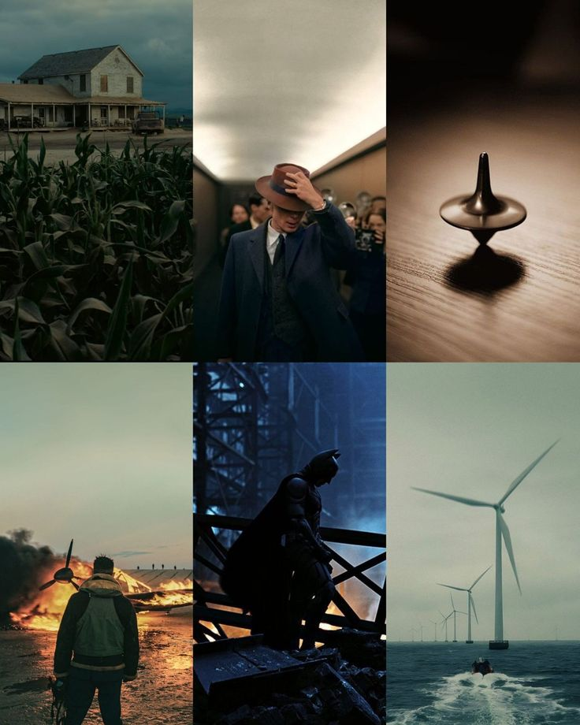
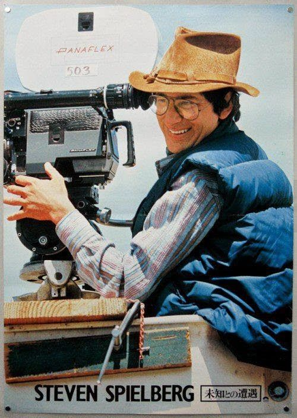
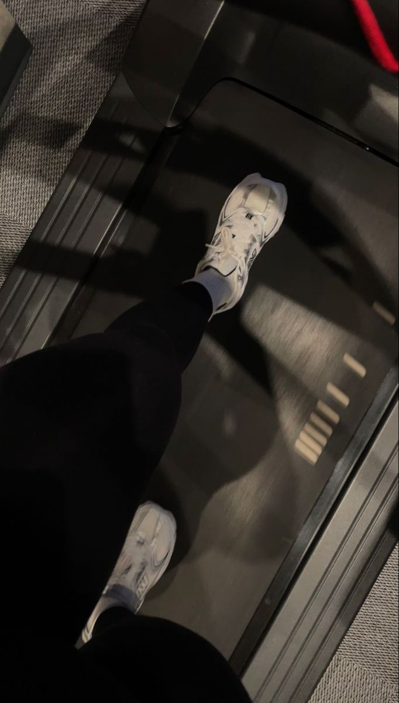
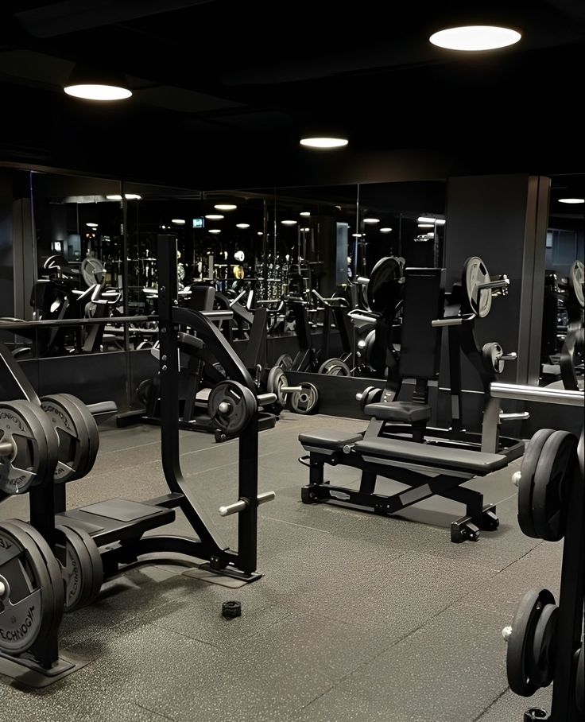

Ephrata Wolde
Ephrata Wolde
Hobbies
Exploring some of my favorite pastimes and activities.
Film and Cinematography
Film and cinematography are passions of mine that I deeply admire and study. I love watching films and short films, paying close attention to how directors use visuals, lighting, and editing to tell powerful stories. I’m fascinated by the creative choices behind each shot, the use of color and angles, and the way sound and music can enhance the narrative. I spend time analyzing films on YouTube, reading about different cinematography techniques, and exploring the work of directors and filmmakers who inspire me. For me, it’s all about understanding how the magic of cinema comes to life on screen, and it’s something I continuously learn from and draw inspiration from.
 Coding and Technology
Coding is a major part of my academic focus, and I enjoy exploring new technologies and tools to develop my programming skills. I spend time learning different programming languages and experimenting with personal projects. Whether it's building websites or testing out small applications, I love how coding challenges me to think critically and solve problems. My goal is to continue improving my technical abilities and to explore how technology can be used creatively to build innovative solutions.

Fitness and Gym
Fitness has always been a key part of my routine, not just for physical health but also for mental clarity. I focus on a mix of strength training and cardio, pushing myself to reach new fitness milestones. It’s not just about lifting weights, but also about maintaining discipline, tracking progress, and balancing intensity with recovery. Gym time serves as both a way to challenge my body and a chance to unwind and clear my mind, which helps me stay focused on my academic and personal goals.
 